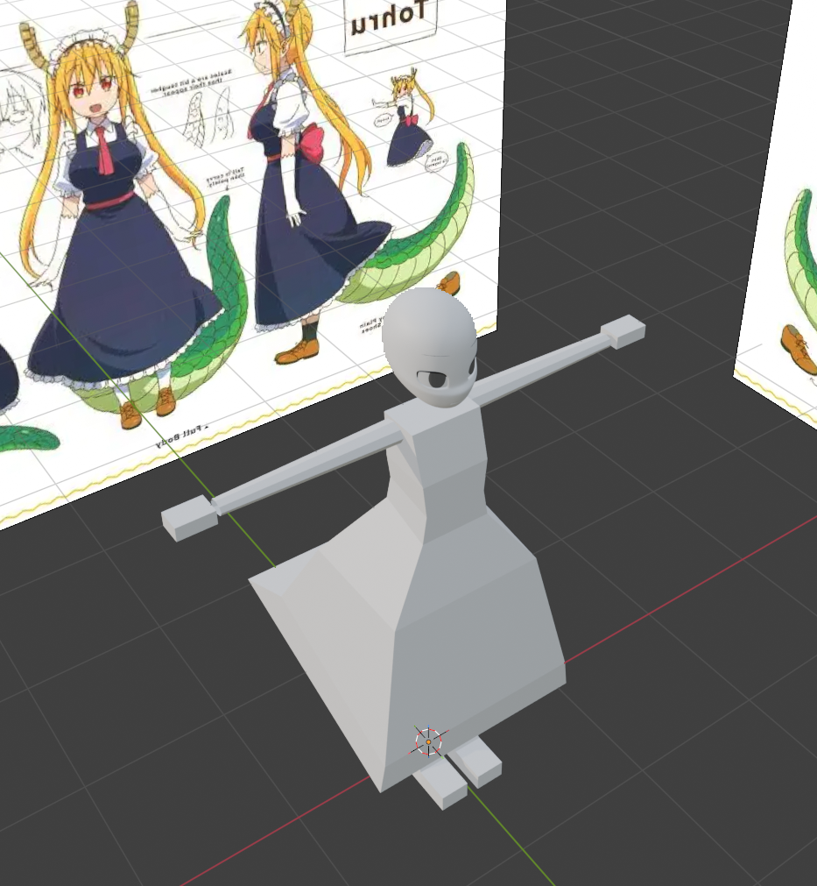
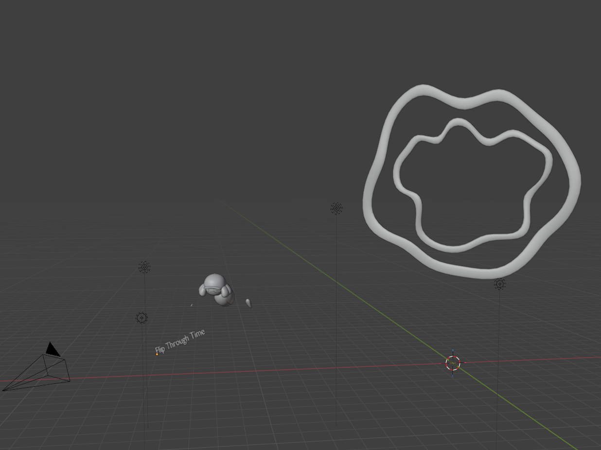

Welcome to my web page! Here you'll find fun facts about me and anything else you'd want to see. Stop and smell the roses.
I am 2nd year student at IIT majoring in Game Design and experimental media. My first year at IIT was pretty rocky: I didn't get the classes I wanted, I was constantly shoved around by the registration process, and it was pretty hard getting used to the new environment. Despite the hicups I've been able to perserve and finally get to make games of my own.
Given the nature of games I'm interested in a good number of different disciplines: writing, art (2d and 3d), animation, programing, audio. However if I am being completely honest with myself my true loves are animation and modeling.
I've been facinated with animation since I was very little. I constantly kept rewinding scenes of my favorite animated movies to see how they got the characters to move in the fluid way they did. However it wasn't until much later in my life that I got my hands on a laptop capable of loading up some animation software. Source Film Maker was both a blessing and a curse, it's what allowed me to fully dive into the wonderful world of animation and practice to my heart's content. However the software was an absolute mess to work with and the laptop I was working with was no super machine either. Eventually, after getting a much needed upgrade to my hardware, I moved to blender, which while daunting at first gave me much more control.
Animating in blender was fun, however most of the models I could import into the software were very poorly rigged/optimized. I had to patch them up so often that I eventually started thinking "why don't I make my own models instead?" That's ultimately what got me into modeling.

The image above is something I did for practice. Obviously it's still not finished yet, but I like keeping images like these around because I like seeing my progress and to remind myself how a model looked before I finished it.

This is a behind the scenes look at some key art for a game I am working on with a group